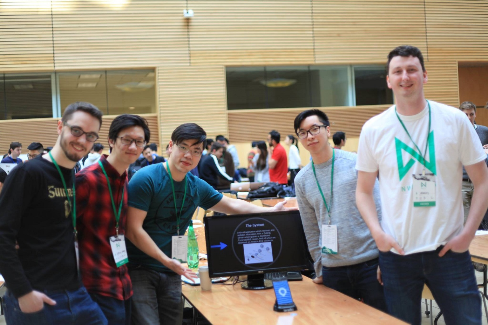

LifeBand is a wristband system designed to alleviate patient misidentification in hospitals and senior centers by managing patient medical record access. The project was created during March 18-19, 2017 for nwHacks 2017, an annual hackathon hosted by StartupStorm from the University of British Columbia.
We placed among the top 5 projects.
According to a study by the esteemed Johns Hopkins University, the third leading cause of death in the US is patient misidentification. Over a quarter of a million people die annually due to preventable medical errors - that's 700 deaths a day, or 1 death every two minutes. We set out to envision a technological solution for this problem by better tying patients to their medical records.
Our solution was to create an inexpensive solution which could be scaled to the needs of an entire country's medical records and would allow for maximum availability even when under immense usage. The software system would also allow for complex data analytics to be performed, resulting in a significant increase in medical statistics.
Inexpensive and small identification tags which emit NFC are attached to hospital beds, or placed on wristbands and given to residents of senior centers. These are registered with the records of the person they are given to.
This system is quick to respond and gathers information in real time. It is easy to use for those in the healthcare industry, and it is cheap to implement with minimal hardware components.
Users interact with the tags by opening an Android application and scanning the tag with their NFC-enabled device. The application will contact a Golang server which will query a CockroachDB relational database, both of which are hosted on Amazon Web Services. The patient data returned will be displayed on the device.

We placed among the top 5 projects in the hackathon and were invited to present in front of all participants as well as the final judges. The judges consisted of:

The creators of this project are Kieran McCormick, Jacky Chao, Carlson Chan, Jeffrey Leung, and Bradley Dalrymple.

Disclaimer: This page was created after the hackathon's completion.